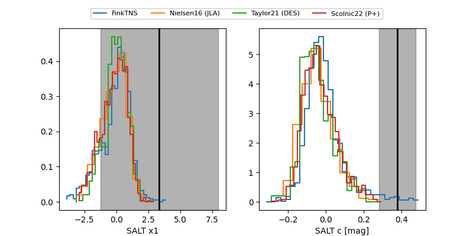

FINK: ZTF25abtgasz
Lasair: ZTF25abtgasz
ALeRCE: ZTF25abtgasz
TNS: 2025yor
YSE: 2025yor
ZTF25abtgasz (ztf,fink)
2025yor (tns,yse)
ATLAS21aah (atlas)
PS25htc (panstarrs)
equatorial (ra, dec) = (9.8280,-0.45590)
galactic (l, b) = (116.2035,-63.16912)

last atlaso=18.89, ztfg=19.11, ztfr=18.97
2 atlaso, 3 ztfg, 3 ztfr detections